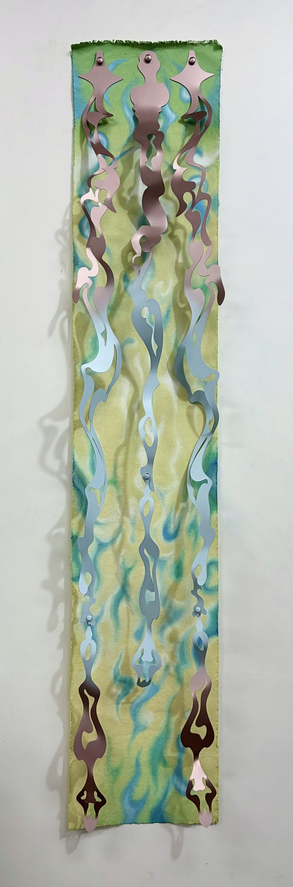

봄 비
- 연도Year
- 2026
- 재료Material
- EGI, 아크릴
- 크기Size
- 135×27×10cm
- 시리즈Series
- 발·겹Screens & Layers
이 작업은 봄비 너머에 기다리고 있는 봄을 보여준다. 나에게 봄 비는 참 밉지만 동시에 반가운 비이다. 봄비도 여름비도 가을비도 모두 차갑지만, 유독 봄비는 벚꽃이 가장 아름다운 짧은 시기에 내려 꽃잎을 모두 떨어뜨리기에 아쉬움과 미움을 사기도 한다. 그러나 벚꽃이 모두 지고 난 뒤에야 비로소 따뜻하고 온전한 봄이 찾아온다. 머리 위로 쏟아지는 봄비를 맞을 때, 나는 오히려 봄이 왔음을 가장 선명하게 느낀다.
이러한 개인적인 봄의 감정과 기억을 '발'이라는 형태를 통해 표현했다. 발은 공간을 나누고 시선을 가리지만, 동시에 그 너머를 바라볼 수 있는 여지와 넘어설 가능성을 품고 있는 소재이다. 흔들리는 금속 발은 빗줄기를 연상시키며, 그 너머에는 벚꽃을 태우듯 흩날리게 한 봄 비 이후에 마주하게 될 새로운 봄의 풍경이 존재한다.
이 작업은 벚꽃을 떨어뜨리는 봄비가 끝이 아니라, 또 다른 계절의 시작임을 이야기한다. 미묘하게 흔들리는 금속 발 사이로 스며드는 봄의 기운은, 사라짐 이후에 비로소 다가오는 새로운 계절의 시간을 시각화한다.
This work shows the spring that waits beyond the spring rain. To me, spring rain is truly hateful and, at the same time, welcome. Spring rain, summer rain and autumn rain are all cold, but spring rain in particular falls during the brief moment when the cherry blossoms are at their most beautiful and knocks every petal to the ground, earning regret and resentment. Yet only after the cherry blossoms have all fallen does a warm and complete spring finally arrive. When I am caught in spring rain pouring down on my head, it is then, if anything, that I feel most vividly that spring has come.
I expressed these personal feelings and memories of spring through the form of a bal, a traditional Korean slatted screen. A bal divides space and blocks the gaze, but at the same time it holds room to look beyond it and the possibility of crossing over. The swaying metal bal recalls streaks of rain, and beyond it lies the new landscape of spring that we will meet after the spring rain has scattered the cherry blossoms as if burning them away.
The work says that the spring rain that brings down the cherry blossoms is not an end but the beginning of another season. The breath of spring seeping through the gently swaying metal bal visualizes the time of a new season that arrives only after things have disappeared.